Набір для малювання
Передмова:
Цей проект передбачає створення програми для малювання. Ви зможете змінювати колір ліній, очищувати екран, робити штампи та багато іншого.
Ресурси
Крок 1: Створення олівця
Ми розпочнемо із олівця, який малює, коли ним водять по сцені.
- Створіть новий проект у Скретч. Видаліть спрайт кота, клікнувши правою кнопкою мишки і натиснувши Вилучити.
- Додайте спрайт олiвця в ваш проект та трохи його зменшіть 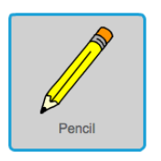
- Клiкнiть на вкладку "Образи" та видалiть ‘pencil-b’ 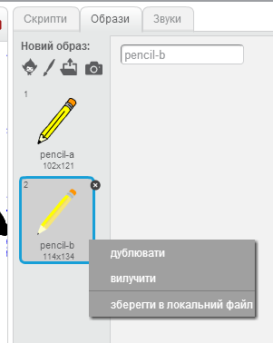
- Перейменуйте образ олівця на "синій олівець". Та використовуючи інструмент "Колір форми" перефарбуйте олівець в синій колір. 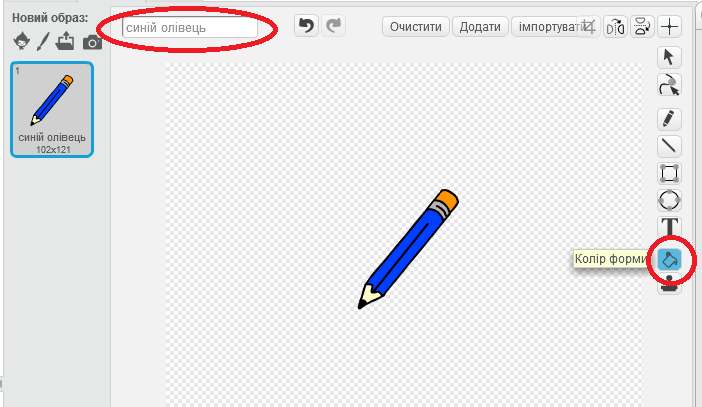
- Зробіть так, щоб олівець слідував за мишкою по сцені, використовуйте блоки команд "завжди" (вкладка Керувати) та "переміститись у вказівник миші" (вкладка Рух). 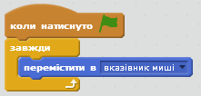
- Розташуйте центр зображення на кінчику олівця. Для цього оберіть кнопку "встановити центр образу" і розмістіть (обертаючи і перетягуючи) його так, щоб позначка центру зображення була на кінчику олівця. 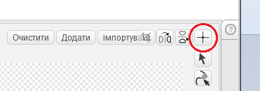 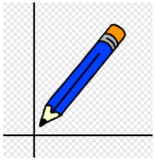
- Ми будемо використовувати кнопку мишки, щоб керувати олівцем – коли мишка натиснута, то олівець малює. Це можна зробити за допомогою блоків "якщо то" та "мишку натиснуто?" 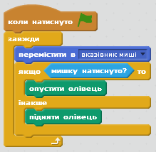
Протестуй свій проект
Натисни на зелений прапорець.
Чи рухається олівець за мишкою? Що відбувається, якщо утримувати кнопку мишки натиснутою і рухати мишкою? Не турбуйтесь з приводу кольору олівця поки що.
Крок 2: Кольорові олівці
Тепер давайте додамо більше кольорових олівців в наш проект
- Продублюйте синій образ олівця
- Новий образ назвіть "зелений олівець" та перефарбуйте його в зелений колір 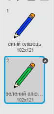
- Створіть два нових об'єкти-квадратики, які ми будемо використовувати для вибору кольору олівця 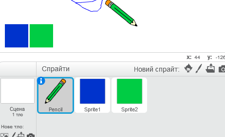
- Коли зелений квадратик натиснутий, він має оповіщати про зміну кольору на зелений 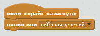
- Тепер олівець може реагувати на це повідомлення 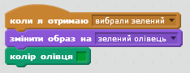
- Повторіть ці дії для синього олівця
- Коли гра тільки починається, нам потрібно очистити екран після попереднього запуску та вказати, яким кольором зробити олівець 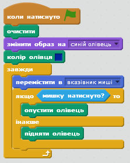
- Протестуйте свій проект. Чи вдається вам перемикатись між зеленим та синім кольором? 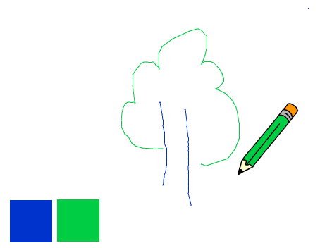
Крок 3: Робимо помилки
Іноді трапляються помилки, так що давайте додамо кнопки "Очистити" і "Ластик"" до нашого проекту!
- Давайте спочатку додамо кнопку для очистки сцени. Щоб зробити це, додайте 'X' літеру-спрайт та перефарбуйте її в червоний 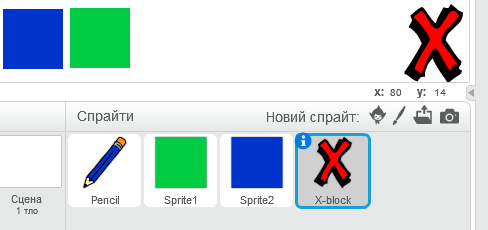
- Додайте до неї скрипт, який буде повністю стирати все намальоване до цього 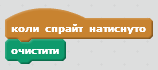
- Також можна створити ластик. Додайте до олівця новий образ з папки "Ресурси" - ластик (eraser.png). Перейменуйте цей костюм на "ластик". 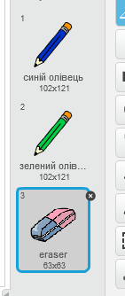
- А на сцену помістіть ще один спрайт з таким же малюнком 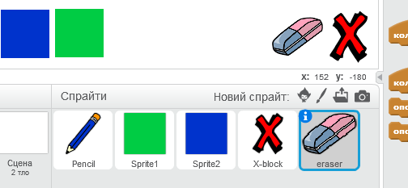
- Після цього можна до ластика додати скрипт, що якщо він натиснутий, сповіщати про це повідомоенням 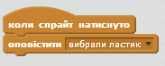
- Коли олівець отримає це повідомлення, він змінить свій костюм на ластик і буде малювати білим кольором 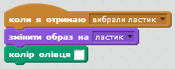
- Протестуй свій проект. Перевір, чи працюють кнопки очистки та стирання. 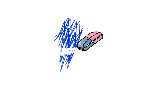
- Але є одна проблема. Зараз можна малювати де завгодно, навіть за іконками вибору кольору 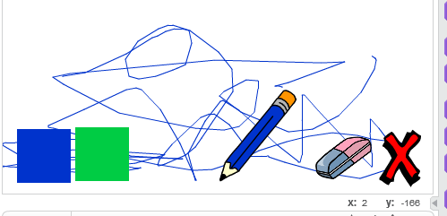 Щоб полагодити це, потрібно вказати олівцю, що він може малювати, тільки якщо y-координата курсора вище за -110. Змініть скрипт на наступний: 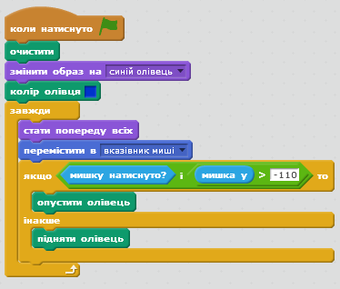
Крок 4: Змінюємо розмір олівця
Додамо користувачеві можливість малювати, використовуючи різні розміри олівця.
- По-перше, додамо нову змінну з ім'ям 'ширина'.
- Тепер зробимо так, щоб олівець завжди встановлюва ту ширину, яка вказана в цій змінній 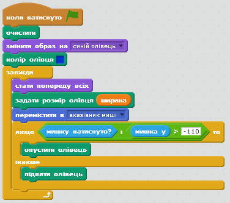
- Число в змінній можна змінювати на сцені, а щоб це було зручніше робити, змініть її вигляд на "слайдер" 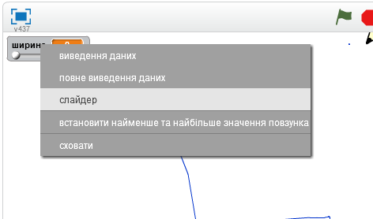
- Протестуй свій проект. Перевір, чи змінюється товщина олівця. 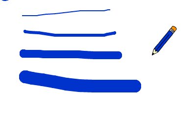
Молодець! Створення основної гри завершено.
Однак є ще деякі речі, які можна використати у грі. Спробуй виконати ці додаткові завдання.
Бонусне завдання: Більше кольорів
Спробуй додати ще червоний, жовтий та чорний кольори. Тепер ти зможеш малювати повноцінні картини.
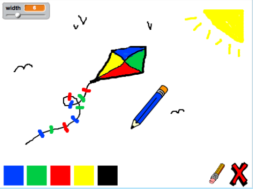Бонусне завдання 2: Шорткоди
Чи можеш ти створити шорткоди для свого проекту? Шорткоди - це привязка якихось дій до натискання клавіш. Наприклад, якщо я натисну клавішу "з" - олівець стане зеленим, а якщо "с" - синім.